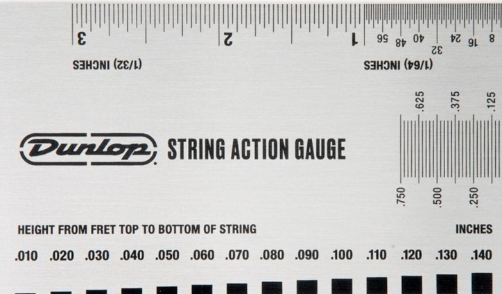
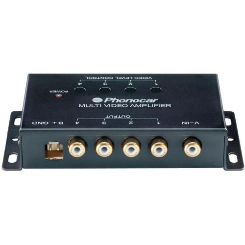
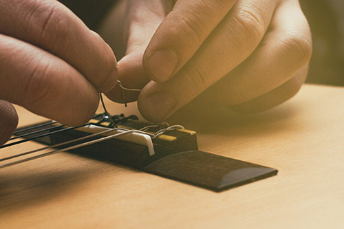

Kako pravilno nastaviti višino strun na kitaro
Nastavljanje višine strun na kitaro je ključno za optimalno igranje in zvok. Začnite z uglašeno kitaro. Uporabite izvijač ali imbus ključ za prilagajanje višine strun ob mostu. Poskrbite, da so strune dovolj visoko, da se izognete neželenim trzanjem, vendar ne previsoko, da ohranite lahkotnost igranja. Po končani nastavitvi preverite intonacijo.
Kako izbrati pravi ojačevalnik za svojo kitaro
Pri izbiri ojačevalnika za kitaro upoštevajte moč, vrsto, in funkcije. Razmislite o žanru glasbe, ki ga igrate, in prostoru, kjer igrate. Preizkusite več modelov, da najdete tistega, ki ustreza vašemu slogu in zvoku.
Top 5 Akordov, ki jih morate znati vsak kitarist
Vsak kitarist bi moral obvladati pet osnovnih akordov: C-dur, G-dur, D-dur, A-mol, in E-mol. Ti akordi tvorijo trden temelj za številne pesmi v različnih žanrih in so ključni za začetno učenje kitare.

Kako izvajati popolne bendovske tehnike na kitari
Navodila za izvajanje popolnih bendovskih tehnik na kitari, vključno s tremolom in uporabo vibrata. Izrazite svoj glasbeni izraz s temi naprednimi tehnikami.

Kako izbrati prave strune za svojo kitaro
Pri izbiri pravih strun za kitaro upoštevajte slog igranja, vrsto kitare in osebne preference. Lahke strune so primerne za začetnike, medtem ko lahko izkušeni kitaristi izberejo tiste z večjim uporom. Posvetujte se s strokovnjakom ali preizkusite različne vrste, da najdete optimalne strune za želeni zvok in udobje igranja.
